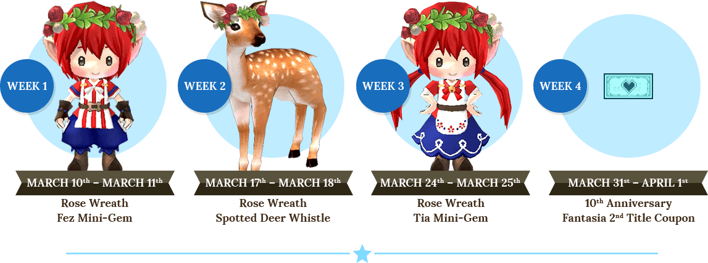
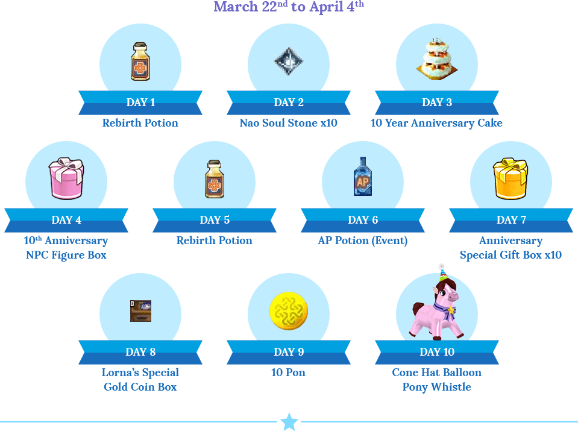
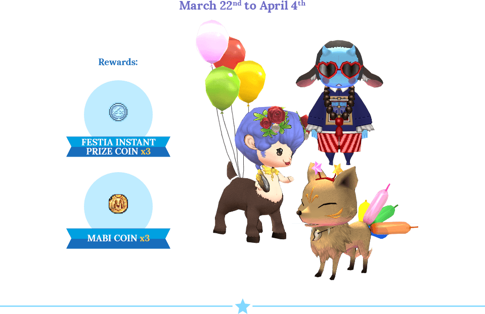
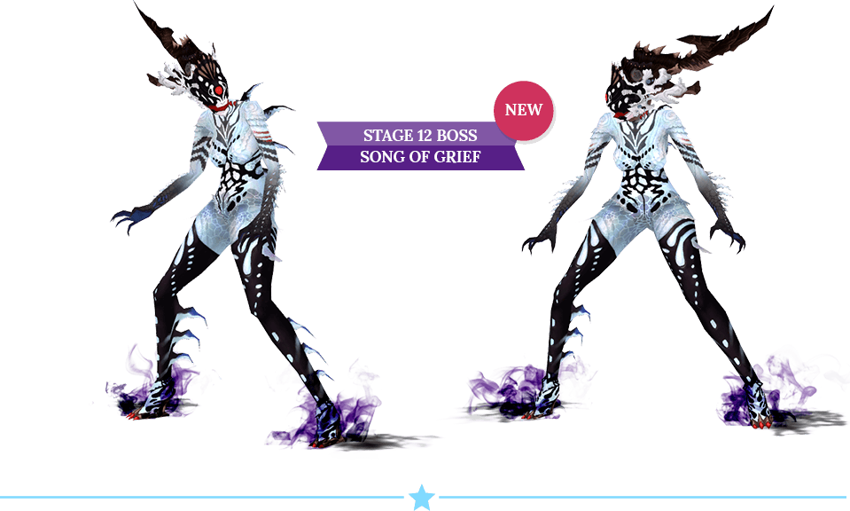
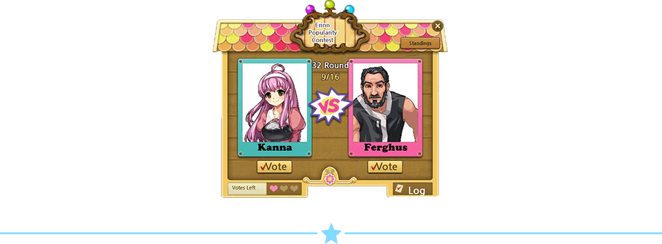
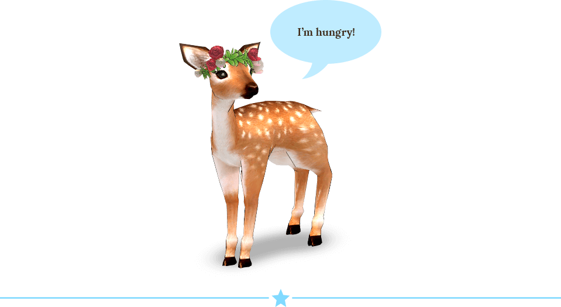
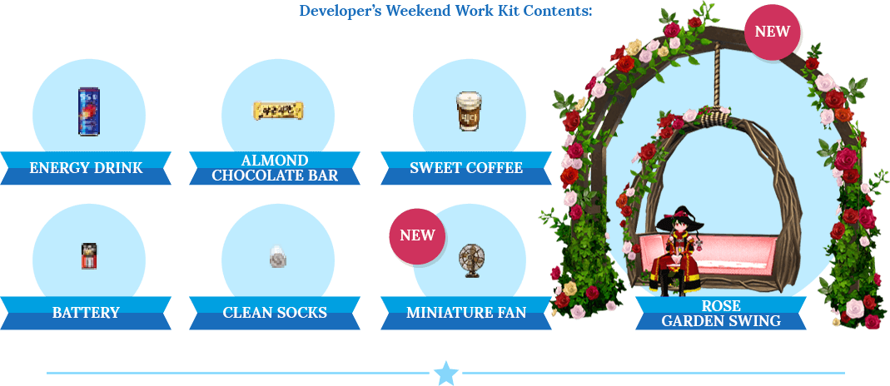
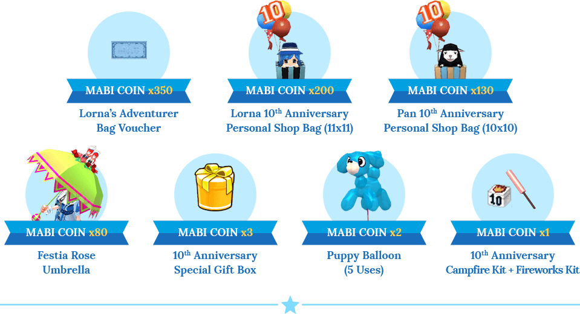
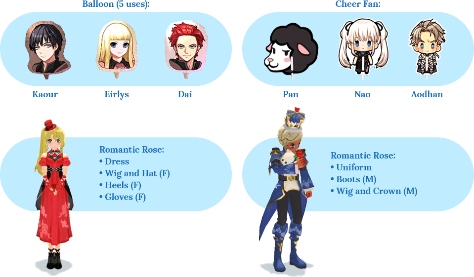

Let’s all celebrate Mabinogi’s 10th Anniversary! Head on down to Festia to join the party, and participate in all of the events we have planned for this special occasion. Thank you for supporting us for 10 wonderful years.
10th Anniversary Weekend Hot Days
Log in for 36 minutes (real time) every day during the 10th Anniversary Event to receive Mabi Coins and Festia Instant Prize Coins up to 5 times per day. Also, receive amazing gifts when you log in for 36 minutes (real time) every weekend.
10 Days of Giveaways
Log in each day to receive an item! Character must be level 30 or higher.
Festival Troublemakers Event
Every day in Festia, these NPCs will appear and request help from people to find lost things.
Prove Yourself in the Cave of Trials!
Obtain the new Title, The Final Trial Dominator, when you pass the 13th Trial!
Popularity Contest
Participate in the Erinn Popularity Contest using the Popularity Contest Sticker that’s given out at 7 AM PST daily. You will be able to vote for new NPCs such as Enn, Kanna, Elsie, Logan, Dai, and Kaour.
The Fattening
Help the Fattener make food for the Hungry Rose Wreath Spotted Deer to receive 3 Mabi Coins and 3 Festia Instant Prize Coins.
Developer’s Thank-you Note
Complete the quest, The Suspicious Milletian, to obtain a Developer’s Weekend Work Kit, Rose Garden Swing, x20 Mabi Coins, and x20 Festia Instant Prize Coins!
Festia Instant Prize Event
You can enter two different ways: Gold Entry / Festia Instant Prize Coin Entry
Gold Entry: Entry can be submitted by the Main Character up to 20 times a day.
You will need 5,000 gold per entry. (Entry count will be reset at 7 AM PST every day)
Coin Entry: Entry can be submitted using 1 Festia Instant Prize Coin. There is no entry limit.
*The Festia Instant Prize will take place from 3/8 – 4/4
*There is a set number of 1st, 2nd, and 3rd place rewards. That count resets every Thursday at 7AM PST.
Mabi Coin Exchange Shop
Go to Dero the Eventsman to exchange Mabi Coins for various gifts.
10th Anniversary Special Gift Box
Use the 10th Anniversary Special Gift Box to obtain one of various gifts, including the items below.
